This chapter covers relationship dissolution, jealousy, family conflict, elder mortality, financial ruin, and social ostracism. Establish Lines & Veils before play. A player may delegate any relationship scene to the GM and never resolve it at the table. No character's relationship status, sexual orientation, or family structure may be assigned without explicit player consent. Content may involve discrimination, legal discrimination against LGBTQ+ and polyamorous people, and family estrangement.
In Reality RPG, relationships are the operating system of daily life. Every system — finances, mental health, career, housing, legal standing — runs on top of the relationships you maintain. This page covers nine interconnected systems modeling the full diversity of how humans actually organize their connections, from polyamorous networks to roommate agreements to sibling caregiving disputes.
All relationship structures share a common mechanical foundation: Stress Points (SP) accumulate from friction, RES (Resilience) checks determine emotional regulation, PRC (Perception) checks govern reading social situations, and INT checks handle negotiation and planning. Every dice roll follows the standard 2d10 + modifier vs TN system.
A character's maximum SP = 20 + (RES modifier × 5). At 0 SP you are at full capacity (maxed-out stress) and functionally impaired. SP decreases naturally by 1 per week of calm life, or faster through intentional self-care, therapy, or supportive relationships. When SP hits 0, the character suffers a Burnout Event — see Mental Health for details.
1. Polyamory 💜💛💚
Polyamory — the practice of maintaining multiple consensual, loving relationships simultaneously — is not a "hard mode" setting. It is a different relationship architecture with its own mechanics, rewards, and challenges. Polyamory in Reality RPG is modeled with three subsystems: structure type, compersion vs jealousy, and time/communication management.
1a. Polyamory Structures
Not all polyamory looks the same. The two dominant models each have different mechanical profiles:
Hierarchical Polyamory
A "primary" partner receives priority; secondary (or tertiary) partners are explicitly ranked.
Mechanical: Easier time management; higher jealousy risk for lower-ranked partners (+2 SP when primary gets new partner)
Relationship Anarchy
No hierarchy — every relationship is valued on its own terms. A best friend, a romantic partner, and a casual lover may all be equally "important."
Mechanical: Harder boundary negotiation (−2 to INT on boundary-setting checks); lower jealousy baseline (−1 SP on jealousy triggers)
Solo Polyamory
Choosing not to couple-stan: no shared home, finances, or legal entanglement with any partner.
Mechanical: Lower financial entanglement; higher housing cost burden; no legal protections for any partner
Polyamory is often depicted as a network rather than a line. See img/poly_family.png for a visual representation of a poly family tree showing how children, partners, and metamours interconnect.
1b. Compersion — The Joy Bonus
Compersion is the warm, joyful feeling of seeing a partner happy in another relationship. In Reality RPG, compersion is a mechanical resource that offsets stress.
When a character witnesses a partner's joy in another relationship, they may make a 2d10 + RES modifier vs TN 35 check. On a success, they gain compersion: reduce current SP by 1 point and gain a +2 bonus to one INT or RES check within 24 hours (representing the emotional warmth carrying forward).
1c. Jealousy Management
Jealousy is not a failure of polyamory — it's a signal. When a jealousy trigger occurs (partner dates someone new, spends time away, expresses feelings for another), the character must make a 2d10 + RES modifier vs TN 40 check.
Result ≥ TN
No SP gain. Processes feelings healthily. May gain +1 compersion next time.
Within 5 of TN
+2 SP. Needs a check-in conversation (2 hours).
Result < TN − 5
+4 SP. May act out. Triggers a Crisis Conversation event.
Each unresolved jealousy event within a 30-day window adds +5 to the TN of future jealousy checks. This models the "straw that broke the camel's back" effect — each unprocessed trigger makes the next one harder to handle.
1d. Time Management
Polyamory requires real time allocation. Each partner relationship demands a weekly minimum of quality time:
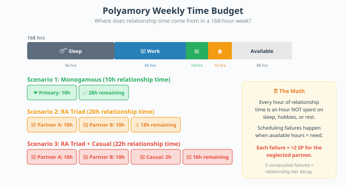
Each week, the character makes a 2d10 + EXP modifier vs Scheduling TN for each partner. Failure means that partner receives less quality time than needed: +2 SP for the neglected partner, and the relationship tier may decay by one level after 3 consecutive failures.
1e. Coming Out as Poly
Revealing polyamory to family, friends, or employers carries real social risk. The reaction depends on the audience:
Close Friends (Progressive)
TN 30 — 2d10 + PRC mod
Failure: +1 SP (surprise, not hostility)
Extended Family
TN 50 — 2d10 + PRC mod + EXP mod
Failure: +4 SP; possible estrangement (see Crisis below)
Workplace
TN 60 — 2d10 + INT mod
Failure: +5 SP; potential employment discrimination (see Law & Civic)
Religious Community
TN 70 — 2d10 + PRC mod
Failure: +8 SP; possible shunning or excommunication
1f. Legal Complications
In most US jurisdictions, polyamorous relationships have zero legal recognition. This creates cascading vulnerabilities:
- Medical decisions: Only a legally married partner can make medical decisions. Non-primary partners may be barred from the hospital room.
- Housing: Only leaseholders have tenant rights. A non-leaseholder partner can be locked out if the primary partner leaves or dies.
- Parenting: Non-biological, non-adoptive partners have no legal standing regarding children. Custody disputes favor biological/legal parents exclusively.
- Immigration: No visa category exists for polyamorous partners. A partner on a visa tied to one spouse loses all status if that marriage dissolves — even if other partners are US citizens.
When a crisis hits (illness, death, eviction, custody dispute), a poly character without legal protections must make a 2d10 + INT modifier vs TN 55 to navigate the system without catastrophic loss. Failure = loss of housing, custody, or medical access for the unprotected partner. This is one of the most emotionally devastating rolls in the game.
Maya (RES +2, EXP +1, INT +1, PRC 0) is in a relationship-anarchy triad with Jordan and Alex, plus a casual partner Riley. It's Week 7 of the campaign.
Time management: Maya needs 10h for Jordan, 10h for Alex (no hierarchy!), and 2h for Riley = 22h/week of relationship time on top of work and self-care. She rolls scheduling:
- Jordan: 2d10 + 1 (EXP) = 14 + 1 = 15 vs TN 45 → Fail. Jordan gets less time. +2 SP for Jordan.
- Alex: 2d10 + 1 = 22 + 1 = 23 vs TN 45 → Fail. Same result.
- Riley: 2d10 + 1 = 8 + 1 = 9 vs TN 55 → Fail by a lot. Riley feels deprioritized.
Maya gains +3 SP from the guilt of not meeting anyone's needs. Her SP is now at 8/12 (capacity = 20 + 2×5 = 30; she started at 22 SP and gained 8 more this week). She schedules a triad check-in (2 hours) and rolls 2d10 + 2 (RES) = 18 + 2 = 20 vs TN 35 to manage the conversation → Fail, but within 5. Strained outcome: the conversation is honest but messy. −1 SP from the honesty, but +2 SP from the discomfort. Net: Maya is at 9 SP.
Meanwhile, Alex's new coworker asks them on a date. Maya's jealousy trigger: 2d10 + 2 (RES) = 11 + 2 = 13 vs TN 40 → Overwhelmed. +4 SP. Maya is now at 13 SP — getting close to dangerous territory. The player narrates Maya having a quiet panic attack in the bathroom at work.
2. Open Relationships 🔓
An open relationship is a committed primary partnership that permits outside sexual (and sometimes emotional) connections. Unlike polyamory, which embraces multiple loving relationships, open relationships typically maintain one primary emotional bond while allowing sexual freedom. The key mechanical distinction: open relationships require explicit rules, and those rules become a source of ongoing negotiation.
2a. Rules & Negotiations Mechanics
Every open relationship has a Rules Framework — explicit agreements about what is and isn't allowed. The GM and player collaboratively establish these at relationship creation. Common rules:
Emotional Boundary
"No falling in love with others"
Breach TN: 60 (High)
Effect: +5 SP for the betrayed partner; relationship tier drops 1 level
Safety Rule
"Condoms always"
Breach TN: 75 (Very High)
Effect: +8 SP; possible STI exposure roll; trust permanently damaged (−5 to all future trust TNs)
Communication Rule
"Tell before, not after"
Breach TN: 45 (Medium)
Effect: +3 SP; requires repair conversation (3 hours)
Practical Rule
"No overnight stays"
Breach TN: 40 (Medium)
Effect: +2 SP; minor trust erosion
Disclosure Rule
"No names, no details"
Breach TN: 30 (Low)
Effect: +1 SP; annoyance, not crisis
When a character is tempted to breach a rule, they roll 2d10 + RES modifier vs Breach TN. Success = they hold the line. Failure = they breach, and the effects trigger.
2b. Emotional vs Sexual Openness
The distinction matters mechanically:
- Sexually open only: Outside connections are physical. Lower jealousy risk (TN −10 on jealousy checks) but higher risk of accidental emotional attachment (monthly 2d10 vs TN 50 — if failed, one partner develops feelings for someone outside).
- Emotionally open: Outside connections can include love. Higher jealousy risk (TN +10 on jealousy checks) but lower accidental attachment risk (the attachment is expected and consensual).
2c. STI Management
With multiple sexual partners, STI risk becomes a real mechanical concern:
Condoms every time
Testing every 3 months
~1% risk/month
New partners only
Testing every 6 months
~5% risk/month
No barriers
Infrequent testing
~15% risk/month
No barriers, no testing
Highest risk
~30% risk/month
Each month, roll 2d10. If result ≤ Risk % × 2, the character contracts an STI. The GM determines the type (see Sexual Health page). Regular testing reduces the TN for partner trust checks by 10 — knowing you're clean is a form of care.
2d. Trust Building
Trust in an open relationship is earned incrementally. Each time a partner follows through on a rule, trust increases by 1 point (max 20). Trust acts as a buffer: each point of trust reduces SP gain from jealousy triggers by 1 (minimum +1 SP).
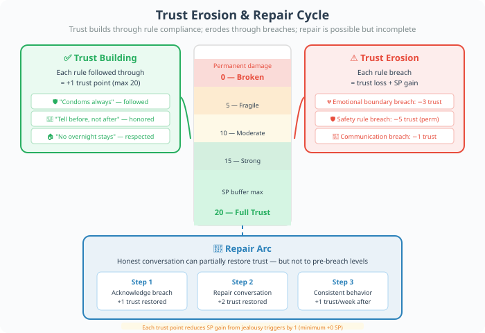
Sam (RES +0, INT +2) and Lee (RES +1, INT +1) have been together 2 years and negotiate an open relationship. Their rules: (1) condoms always, (2) tell before not after, (3) no overnight stays, (4) no names/no details. Trust level: 14/20.
Lee goes to a party and meets someone attractive. The temptation to skip the "no overnight" rule: 2d10 + 1 (RES) = 16 + 1 = 17 vs TN 40 → Success. Lee holds the line, tells Sam about the encounter the next morning. Trust increases to 15/20.
Sam feels a jealousy pang. Normal TN would be 40, but with 15 trust points, SP gain is reduced to +0 SP (40 − 15 = 25, still positive but the minimum SP gain from any trigger is 0 when trust is high enough). Sam processes the feeling and even rolls compersion: 2d10 + 0 (RES) = 19 vs TN 35 → Fail. No mechanical compersion, but narratively Sam feels a flicker of warmth.
3. Situationships 🌫️
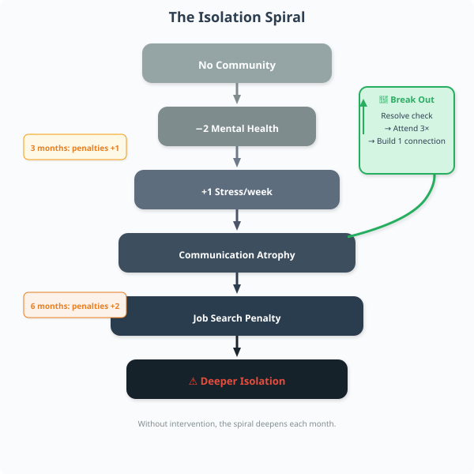
A situationship is that liminal space between friendship and relationship where nothing is defined. You're doing relationship things — sleeping over, meeting friends, emotional intimacy — but no one has said the words. In Reality RPG, ambiguity is mechanically toxic.
3a. The Ambiguity Tax
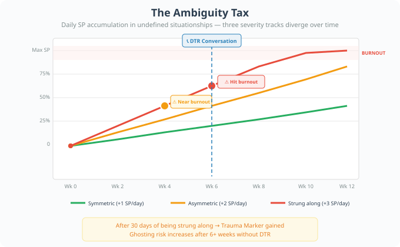
Every day a situationship remains undefined, the character gains +1 SP. This is not negotiable — the human brain is wired to seek clarity, and sustained ambiguity is a form of cognitive stress.
Modifiers to the daily SP gain:
- Both parties are aware of the ambiguity: +0 (baseline +1 SP/day)
- One party thinks it's more than it is: +2 SP/day (asymmetric expectations are brutal)
- One party is stringing the other along: +3 SP/day (this is emotional abuse; the stringed-along character may also gain a Trauma Marker after 30 days)
3b. DTR — Defining The Relationship
The "Let's DTR" conversation is a structured event in Reality RPG. It follows a fixed sequence:
- Initiation: The character who wants to DTR must choose the right moment. Roll 2d10 + PRC modifier vs TN 40. Failure = bad timing (partner is stressed, distracted, or in a bad mood). The conversation is still possible but TNs increase by +5.
- Expression: The character states what they want. Roll 2d10 + INT modifier vs TN 35. Failure = muddled communication; the other person doesn't fully understand.
- Response: The other person responds. The GM rolls 2d10 + NPC's RES modifier vs TN based on their feelings:
3c. Ghosting Mechanics
Ghosting — sudden cessation of all contact without explanation — is a trauma event:
- Immediate effect: +6 SP from the shock and confusion
- Ongoing: +1 SP/week for 4 weeks as the character processes the abandonment
- Long-term: The ghosted character gains a "Trust Deficit" condition: all future relationship-building TNs increase by +5 until they complete a "Rebuilding Trust" arc (see below)
When a situationship has lasted 6+ weeks without DTR, roll 2d10 at the start of each new week. On a result of 1–5, there is a ghosting risk that week. Roll a second 2d10: on 1–3, ghosting occurs. On 4–6, the other person pulls away gradually (less traumatic: +3 SP instead of +6, no Trust Deficit). On 7–10, the situationship continues.
Jordan (PRC +1, INT +0, RES −1) has been in a situationship with Casey for 11 weeks. Jordan thinks they're basically dating. Casey is uncertain. Daily SP gain: +2 SP/day (asymmetric expectations).
After 11 weeks, Jordan has accumulated +22 SP from the situationship alone (plus whatever else life gave them). Jordan's SP capacity is 17.5 → rounded to 17 SP max (RES −1 → 20 + (−1)×5 = 15... actually let's use RES 8, mod = −1, capacity = 15). Jordan is at 14/15 SP — one roll away from burnout.
Jordan decides to DTR. Initiation: 2d10 + 1 (PRC) = 12 + 1 = 13 vs TN 40 → Fail. Jordan brings it up while Casey is stressed about a work deadline. TNs increase by +5.
Expression: 2d10 + 0 (INT) = 24 vs TN 35 → Fail. Jordan's words come out messy — "I just feel like we should... I don't know, are we...?"
Response: GM rolls for Casey (uncertain feelings, TN 55 due to +5 penalty). 2d10 + 0 (NPC RES) = 19 vs TN 55 → Fail. Casey needs time. +2 SP/day for 3 days while waiting. Jordan is now at 17/15 SP — BURNOUT. Jordan calls in sick to work for a week and spends it in bed crying.
Three days later: Casey texts: "I think I want to try this. Can we talk?" The DTR arc restarts, but Jordan's Trust Deficit means future TNs are +5 harder.
4. Long-Distance Relationships 🌍✈️
A long-distance relationship (LDR) is any committed relationship where partners live more than 100 miles apart and cannot see each other at least weekly. Distance adds structural stress that compounds over time.
4a. Communication Frequency Requirements
LDRs require active communication to maintain. Each week, the character must meet a communication quota:
Same Country, Different City
100–500 miles apart
Min contact: 3 calls/texts + 1 video call/week
Communication TN: 35
Failure: +2 SP; partner feels neglected
Coast-to-Coast / Different Time Zone
Large time gap
Min contact: 4 calls/texts + 2 video calls/week
Communication TN: 45
Failure: +3 SP; relationship tier may decay
International
Cross-border distance
Min contact: 5 contacts + 2 video calls/week
Communication TN: 55
Failure: +4 SP; serious erosion of connection
Roll 2d10 + EXP modifier vs Communication TN each week. Failure means the character was too busy, too tired, or too stressed to maintain contact. Two consecutive failures = relationship tier drops by one level.
4b. Video Call Mechanics
Video calls are the lifeline of LDRs but come with their own friction:
- Technical issues (buffering, audio problems): roll 2d10 vs TN 40. Failure = the call is frustrating. +1 SP.
- Emotional connection: after a successful video call, roll 2d10 + RES modifier vs TN 35. Success = the call was emotionally nourishing (−1 SP for both partners). Failure = the call highlighted the distance and made it worse (+1 SP).
- Physical intimacy substitutes: sexting, phone sex, etc. Roll 2d10 + PRC modifier vs TN 40. Success = satisfying enough to reduce loneliness (−1 SP). Failure = awkward or unsatisfying (+1 SP).
4c. Visiting Costs
Physical visits are essential but expensive. Each visit has three cost layers:
🏙️ Short Distance (Same Country)
💰 Money: $200–600 (flights + hotel)
⏰ Time: 2–3 days (travel + visit)
🏢 Work: 1–2 PTO days
😤 SP Cost: +2 SP from travel stress
✈️ Long Distance (International)
💰 Money: $800–2,500 (flights + hotel + visa fees)
⏰ Time: 5–7 days (jet lag extends recovery)
🏢 Work: 3–5 PTO days; possible job risk if frequent
😤 SP Cost: +4 SP (jet lag + expense anxiety + homesickness)
4d. Reunion Events
When partners finally reunite after a separation, a Reunion Event triggers:
- Positive reunion: Roll 2d10 + RES modifier vs TN 30. Success = both partners feel deeply reconnected. −3 SP for both. Relationship tier may increase by one level.
- Difficult reunion: If roll fails, the real-world proximity reveals incompatibilities that distance masked. +2 SP. A Reality Check Conversation is required within 48 hours.
4e. Breakup Risk
LDRs have a monthly breakup risk that increases with distance and duration:
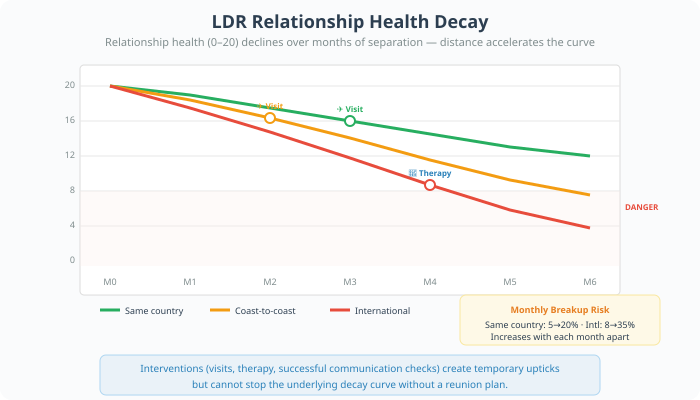
Each month, roll 2d10. If result ≤ Risk × 2, the GM triggers a Breakup Crisis. The character can attempt to save the relationship with a 2d10 + RES mod + INT (combined) vs TN 50 check. Success = the relationship survives this month. Failure = breakup. +8 SP from the breakup itself.
Priya (EXP +2, RES +1, INT +1, PRC +0) lives in Seattle. Tomás lives in São Paulo. They've been apart for 8 months. International LDR, 6–12 month tier.
Week 34: Priya's communication check: 2d10 + 2 (EXP) = 25 + 2 = 27 vs TN 55 → Fail. She's been swamped with a project at work and barely texted. Tomás feels abandoned. +4 SP for Priya (from guilt) and +3 SP for Tomás (from neglect).
Month 8 breakup risk: 2d10 = 18 vs Risk 25 × 2 = 50 → 18 ≤ 50 → Breakup Crisis triggered!
Priya attempts to save it: 2d10 + 1 (RES) + 1 (INT) = 21 + 2 = 23 vs TN 50 → Fail. The accumulated distance, missed calls, and emotional drift are too much. Tomás texts: "I think we need to stop. I'm meeting someone here. It's not fair to either of us."
Priya gains +8 SP from the breakup. Combined with her existing 11 SP, she's at 19/30. She books a flight to see Tomás one last time ($1,400, 5 PTO days, +4 SP from travel) for a closure visit. The reunion event roll: 2d10 + 1 (RES) = 8 + 1 = 9 vs TN 30 → Fail. The closure conversation is painful but honest. +2 SP, but the honesty helps her start processing. Priya enters Month 9 with 21 SP — she needs therapy.
5. Friend Group Dynamics 👥
Friend groups are complex social ecosystems with their own politics, hierarchies, and fault lines. In Reality RPG, a friend group is modeled as a cohesion system that can strengthen, fracture, or dissolve.
5a. Group Cohesion Score
Every friend group has a Cohesion Score from 0–20. This is a group-level stat that affects all members:
16–20
−1 SP/week from belonging; +2 social opportunities
11–15
Baseline; no bonus or penalty
6–10
+1 SP/week from tension; social opportunities −1
1–5
+2 SP/week; members may leave; gossip/betrayal risk doubles
0
"Loss of Community" stressor (+1 SP/week indefinitely)
5b. Friend Drama Events
When cohesion drops below 10, drama events become likely. Each month, roll 2d10 for each strained group:
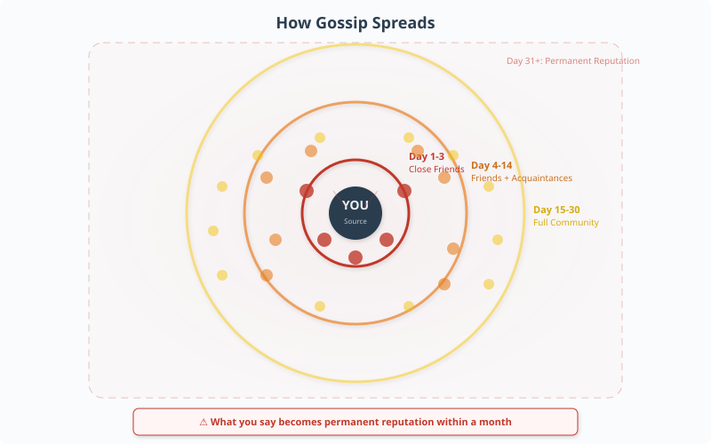
Gossip Spiral
d10: 1–2
Someone spreads a rumor about a member. Affected: +3 SP. Group cohesion −2.
Betrayal
d10: 3
Two members discover a secret. Both: +4 SP. Cohesion −3.
Falling Out
d10: 4
Two members stop talking. Each chooses a side. Cohesion −4. May split the group.
"Third Wheel" Problem
d10: 5
New person joins. Existing members feel displaced. +2 SP. Cohesion −1.
Silent Resentment
d10: 6–7
Unspoken grievances accumulate. Cohesion −1. Next drama event is +1 tier worse.
Nothing
d10: 8–10
The group survives another month. Cohesion +1 (small healing).
5c. Rekindling Old Friendships
Reaching out to an old friend is a structured interaction:
- Initiation: Roll 2d10 + PRC modifier vs TN 35. Success = the friend responds warmly. Failure = they're distant or unresponsive.
- Reconnection: If they respond, a catch-up conversation takes 1–2 hours. Roll 2d10 + RES modifier vs TN 40. Success = you feel reconnected (−2 SP; old friendship tier restored to one level below what it was). Failure = the conversation is awkward; you're both different people now (+1 SP).
- Maintenance: To keep the friendship alive, you need regular contact. Same mechanics as LDR communication, but with TN 30.
5d. Friend-to-Lover Transitions
When a friendship becomes romantic, the stakes are massive — you risk losing both the romantic AND the platonic relationship:
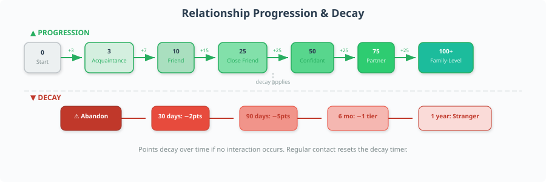
- Confession: Roll 2d10 + PRC mod + INT mod vs TN 45. Success = mutual feelings. The friendship transitions to a relationship. The friend group may react: roll 2d10 vs TN 40. Success = friends are happy for you. Failure = friends are uncomfortable; group cohesion −2.
- Rejection: If the confession fails, the friendship is damaged. Cohesion −2. The rejected character gains +4 SP. The friendship cannot recover to its previous tier for at least 6 months.
6. Roommate Relationships 🏠
Sharing living space is one of the most common sources of daily stress in adult life. Roommate conflicts are mundane but relentless — they chip away at SP every single day.
6a. Roommate Agreement Mechanics
A Roommate Agreement is a living document that covers chore division, guest policy, noise rules, and financial responsibilities. At move-in, each roommate establishes their Agreement Compliance Score (0–20). This decays over time as life gets messy.
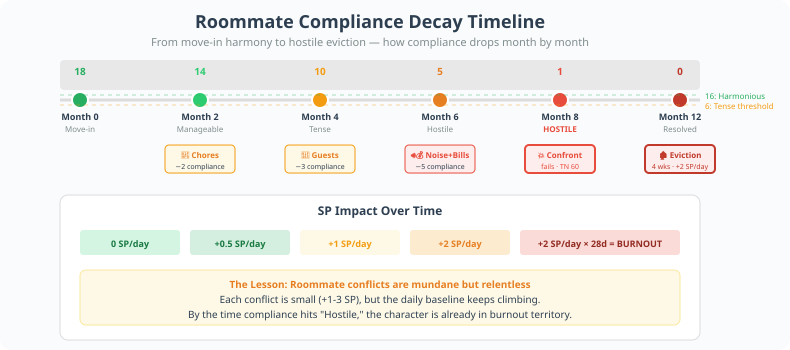
16–20
No SP gain — roommates are chill
11–15
+0.5 SP/day (effectively +1 every other day)
6–10
+1 SP/day
1–5
+2 SP/day; active conflict events possible
6b. Common Conflict Sources
Chore Division
Frequency: Weekly
Resolution: 2d10 + DXT mod vs TN 35
Failure: Compliance −2; +2 SP for the person doing more
Guest Policy
Frequency: Monthly
Resolution: 2d10 + INT mod vs TN 40
Failure: Compliance −3; +3 SP for the person whose boundary was crossed
Noise Complaints
Frequency: Weekly
Resolution: 2d10 + RES mod vs TN 30
Failure: Compliance −1; +1 SP for the person affected
Financial Disputes
Frequency: Monthly (bill day)
Resolution: 2d10 + INT mod vs TN 45
Failure: Compliance −3; +3 SP; possible non-payment crisis
Fridge Space Wars
Frequency: Biweekly
Resolution: 2d10 + RES mod vs TN 25
Failure: Compliance −1; +1 SP (petty but real)
6c. Eviction of Difficult Roommates
Getting a bad roommate to leave is legally and financially complex:
- Amicable departure: If compliance is ≥ 6, you can negotiate. Roll 2d10 + INT mod vs TN 40. Success = they agree to leave. Find a replacement (see below).
- Hostile departure: If compliance is ≤ 5, legal action may be needed. Roll 2d10 + INT mod vs TN 60. This involves landlord involvement, possible small claims court, and 2–6 weeks of additional +2 SP/day from the ongoing conflict.
- Leaseholder advantage: If you're on the lease and they're not, you can change the locks. This is legally gray — roll 2d10 + INT mod vs TN 50. Success = they leave without incident. Failure = they sue for illegal eviction (+5 SP, $500–2,000 in legal fees).
6d. Finding New Roommates
When a roommate leaves, finding a replacement is a screening process:
- Post on Craigslist/Roomies/FB Groups: free but high risk of bad matches
- Use a roommate-matching service: $50–150 fee; +10 to screening TN
- Rely on friend referral: free; +15 to screening TN but limited pool
For each candidate, roll 2d10 + PRC modifier vs TN 40 to assess compatibility. Success = good match (start at compliance 15+). Failure = bad match (start at compliance 8 or lower; conflicts emerge within weeks).
Alex (DXT +0, INT +1, RES +0, PRC +1) shares a 2BR in Portland with Morgan. They've been roommates for 8 months. Compliance started at 18, now it's at 7.
Week 32: Multiple conflicts hit simultaneously:
- Chores: Morgan didn't do dishes again. 2d10 + 0 (DXT) = 14 vs TN 35 → Fail. Compliance drops to 5. Alex gains +2 SP.
- Guests: Morgan had a 3-day sleepover without asking. 2d10 + 1 (INT) = 22 vs TN 40 → Fail. Compliance drops to 2. Alex gains +3 SP.
- Noise: Morgan's partner plays music late. 2d10 + 0 (RES) = 17 vs TN 30 → Fail. Compliance drops to 1. Alex gains +1 SP.
Alex is now gaining +2 SP/day from hostile living conditions. Combined with work stress (already at 10 SP), Alex is at 12 SP and climbing fast.
The confrontation: Alex tries to negotiate Morgan out. Compliance is 1, so this is a hostile departure. 2d10 + 1 (INT) = 26 + 1 = 27 vs TN 60 → Fail. Morgan refuses to leave. "I have rights too, Alex."
Alex involves the landlord. The process takes 4 weeks. During those 4 weeks: +2 SP/day × 28 days = +56 SP... but SP caps at max (20 for Alex with RES 10). Alex is at 0 SP — burnout territory. Alex calls in sick, starts seeing a therapist, and eventually Morgan agrees to leave after the landlord threatens legal action.
Aftermath: Alex spends $200 on a roommate-matching service and finds Jamie. Screening: 2d10 + 1 (PRC) = 28 + 1 = 29 vs TN 40 → Fail, but close. Jamie is okay — compliance starts at 10. Not great, not terrible. Alex learns that "perfect roommate" is a fantasy and adjusts expectations.
7. Elder Care Decisions 👴👵
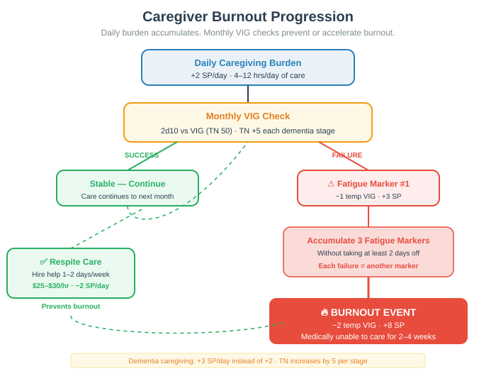
When a parent or grandparent needs care, families face one of the most emotionally and financially devastating decision trees in adult life. Reality RPG models this as a multi-stage crisis event with cascading consequences.
7a. The Care Assessment
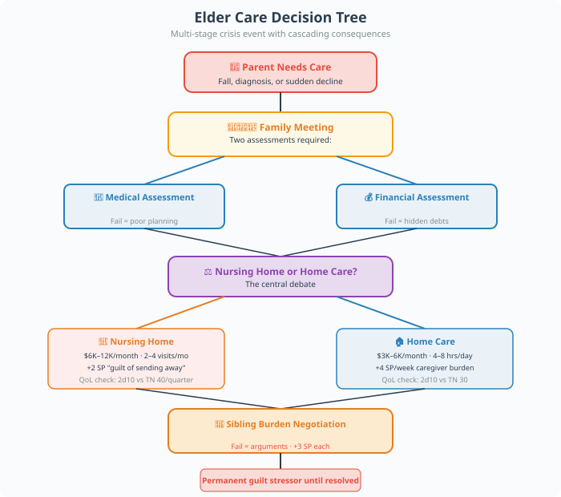
When an elder needs care, the family must first assess the situation. This is a family meeting event:
- Medical assessment: Roll 2d10 + INT mod vs TN 40 to understand the parent's actual needs. Failure = the family underestimates or overestimates the situation, leading to poor planning.
- Financial assessment: The parent's assets, insurance coverage, and Medicaid eligibility must be calculated. This is pure INT work: 2d10 + INT mod vs TN 45. Failure = the family discovers hidden debts or insufficient coverage.
7b. Nursing Home vs Home Care
The central debate. Each option has costs:
🏥 Nursing Home
💰 Monthly cost: $6,000–12,000/month
😤 SP impact: +2 SP for the "guilt of sending them away"
⏰ Time commitment: 2–4 visits/month
📉 Quality of life: Roll 2d10 vs TN 40 each quarter. Fail = parent is depressed/unhappy
🏠 Home Care
💰 Monthly cost: $3,000–6,000/month (paid caregiver)
😤 SP impact: +4 SP/week from hands-on caregiving burden
⏰ Time commitment: Daily, 4–8 hours/day for the primary caregiver
📉 Quality of life: Roll 2d10 vs TN 30. Home is generally better, but caregiver burnout affects quality
7c. Sibling Rivalry Over Caregiving
When multiple siblings are involved, burden distribution becomes a source of deep conflict:
- The "Golden Child" who lives nearby: Gets to visit often and look good, but doesn't do the daily work. Other siblings: +2 SP from perceived unfairness.
- The "Absent Sibling": Lives far away, contributes financially but not physically. Siblings who do the work: +3 SP from resentment.
- The "Black Sheep": Wasn't close to the parent; now has no idea what to do. Family meetings: +2 SP from frustration.
Each family meeting about care is a negotiation event. Roll 2d10 + INT mod + RES (combined) vs TN 50. Success = a workable plan emerges. Failure = arguments, no decisions made, +3 SP for everyone involved.
7d. Guilt Mechanics
The sibling who "didn't do enough" carries a permanent guilt stressor:
- During care period: +1 SP/week for each sibling who feels they're contributing less than their "fair share."
- After parent's death: The guilt doesn't go away. +2 SP at the funeral. +1 SP/week for 6 months as guilt festers.
- Resolution: A sibling can resolve their guilt through a Reconciliation Event: a heartfelt conversation with the sibling who did more work. Roll 2d10 + RES mod + PRC mod vs TN 45. Success = guilt stressor removed. Failure = the conversation backfires; +3 SP.
8. Choosing to Be Childfree 🌿
Choosing not to have children is a valid life path that carries its own social challenges. In Reality RPG, childfree characters face persistent social pressure that accumulates as SP.
8a. Social Pressure from Family
Each family gathering where the topic comes up is a pressure event:
"When are you having kids?"
Frequency: 2–4×/year (holidays)
SP Gain: +2 per occurrence
Defense: 2d10 + RES mod vs TN 35 to deflect
Parent Guilt-Tripping
Frequency: 1–2×/year
SP Gain: +4
Defense: 2d10 + RES mod vs TN 45 to hold boundary
Sibling Comparison
Frequency: Monthly during sibling's pregnancy/baby years
SP Gain: +1
Defense: 2d10 + RES mod vs TN 30 to not internalize
"You'll Change Your Mind"
Frequency: Quarterly (well-meaning friends)
SP Gain: +1
Defense: 2d10 + RES mod vs TN 25 to laugh it off
Defense roll success = the character handles the pressure gracefully and gains no SP. Failure = full SP gain applies. Critical failure (roll < 5) = the character has an emotional reaction (crying, anger, shutting down) that makes the situation worse (+2 additional SP from embarrassment).
8b. DINK Lifestyle — Benefits and Drawbacks
Dual Income No Kids couples have significant financial advantages but face social isolation:
✅ Benefits
💰 Finances: $10,000–20,000/year more disposable income than parents
⏰ Time freedom: Full control of schedule; spontaneous travel possible
🧠 Mental health: Lower baseline stress (no child-related SP sources)
🏠 Housing: Can choose smaller, cheaper, or more interesting housing
⚠️ Drawbacks
💰 Finances: No future financial safety net from adult children
⏰ Time freedom: Aging without family support network
🧠 Mental health: +1 SP/quarter from "am I making the right choice?" doubt
🏠 Housing: No multi-generational home as an asset
8c. Building Chosen Family
Childfree characters often build chosen family — close, committed friendships that function as family. This is mechanically identical to the Friend Group Dynamics system above, but with higher relationship tiers (chosen family members reach "Family" tier, providing the same SP buffer as biological family).
Building chosen family takes time investment: 2–4 hours/week per chosen family member. Roll 2d10 + EXP mod vs TN 35 each month to maintain the bond. Success = the bond strengthens. Failure = drift occurs; the person becomes a regular friend again.
9. Marriage as Economic Partnership 💍📊
Marriage is often romanticized, but mechanically it is primarily an economic contract. Reality RPG models the financial architecture of marriage separately from the emotional relationship, because the two don't always align.
9a. Prenuptial Agreements
A prenup is a risk management tool. Creating one requires:
- 💰 Cost: $2,000–5,000 for mutual legal counsel (each party should have their own lawyer)
- ⏰ Time: 1–3 months of negotiation
- 😤 Social cost: Discussing a prenup signals "I'm planning for this to end badly." Roll 2d10 + RES mod vs TN 35 for each partner. Failure = the topic causes relationship friction (+2 SP).
With a prenup: In case of divorce, asset division follows the agreement. No contested proceedings. SP from divorce is reduced by 3 (the financial uncertainty is resolved).
Without a prenup: In case of divorce, assets are divided by state law (community property or equitable distribution). Contested divorce: +5 SP, $15,000–50,000 in legal fees, 6–18 months of proceedings.
9b. Joint vs Separate Finances
Couples must choose a financial structure:
Fully Joint
All income goes into shared accounts. No "my money" vs "your money."
Mechanical: Simpler budgeting (−5 to monthly finance TN); but if one partner overspends, both suffer. Trust is essential.
Fully Separate
Each partner manages their own finances. Household expenses split 50/50 or proportionally.
Mechanical: More autonomy; but higher monthly finance TN (+5) due to coordination overhead. Income disparity creates inequity.
Hybrid
Joint account for shared expenses; individual accounts for personal spending.
Mechanical: Balanced. Base monthly finance TN. Most common in stable marriages.
9c. Marriage Tax Effects
The "marriage penalty" or "marriage bonus" is real:
- Marriage bonus: When one partner earns significantly more than the other, filing jointly may reduce total tax. Benefit: $1,000–5,000/year in tax savings.
- Marriage penalty: When both partners earn similarly (especially high earners), filing jointly may increase total tax by $2,000–8,000/year.
- Roll: At tax time, roll 2d10 + INT mod vs TN 40 to optimize filing strategy. Success = you minimize tax liability. Failure = you overpay by an average of $1,500.
9d. Alimony
If the marriage ends and one partner earned significantly less (often due to career sacrifices for family), alimony may be awarded:
- Calculation: Based on marriage duration, income disparity, and standard of living. Rough guideline: 30% of the higher earner's monthly income for marriages under 10 years; up to 50% for marriages over 20 years.
- Duration: Typically half the length of the marriage (so a 10-year marriage = 5 years of alimony).
- SP impact: Paying alimony: +2 SP/month from financial strain. Receiving alimony: +1 SP/month from the emotional toll of the divorce reminder, but −$X from financial stress.
9e. The Business Side — Annual Marriage Review
Just as businesses do annual reviews, healthy marriages benefit from a Relationship Audit once per year:
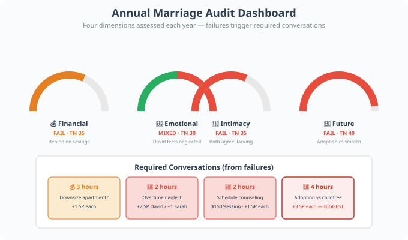
Each success = the marriage is healthy in that dimension (−1 SP for both partners from reassurance). Each failure = a discussion is required (2–4 hours; +1 SP from the discomfort of honest conversation, but prevents larger crises later).

David (INT +2, RES +1, PRC +0) and Sarah (INT +1, RES +2, PRC +1) have been married 7 years. Hybrid finances. No kids. About to do their annual audit.
Financial review: David rolls 2d10 + 2 = 20 + 2 = 22 vs TN 35 → Fail. They're behind on retirement savings. A 3-hour discussion reveals Sarah wants to downsize their apartment to save more; David is attached to their current place. +1 SP each from the uncomfortable conversation, but now they have a plan.
Emotional check-in: Sarah rolls 2d10 + 2 = 27 + 2 = 29 vs TN 30 → Bare success. She feels valued. David rolls 2d10 + 1 = 11 + 1 = 12 vs TN 30 → Fail. He's been feeling emotionally neglected. This triggers a deeper conversation: David has been working overtime and hasn't been present. +2 SP for David (from confronting his own behavior), +1 SP for Sarah (from hearing David's pain).
Intimacy: David rolls 2d10 + 0 = 15 vs TN 35 → Fail. The physical intimacy has declined. Sarah rolls 2d10 + 1 = 23 + 1 = 24 vs TN 35 → Fail. Both agree it's been lacking. This isn't a crisis — it's data. They schedule a couples' counseling session (next month, $150/session, 1 hour).
Future alignment: Sarah rolls 2d10 + 1 = 28 + 1 = 29 vs TN 40 → Fail. She's been quietly wondering about adoption. David rolls 2d10 + 2 = 19 + 2 = 21 vs TN 40 → Fail. He's firmly childfree. This is the biggest finding of the audit. A 4-hour conversation ensues. +3 SP each. But the audit caught this before it became a crisis — they can address it now, together, with counseling support.
Net result: The audit was painful (+7 SP for David, +6 SP for Sarah over the weekend), but it prevented a much larger crisis 2–3 years down the line when the resentment would have been unresolvable.
Cross-Structure Mechanics 🔄
Some mechanics apply across all relationship structures:
Relationship Tier Decay
Any relationship — romantic, platonic, familial — can decay if neglected. Each month without meaningful contact, the relationship tier drops by one level. Recovery requires active reconnection (see Rekindling Old Friendships above).
The "Relationship Stack" Burden
Maintaining multiple relationship structures simultaneously creates a compounding SP burden. A character who is polyamorous, has a strained roommate, and is managing elder care is juggling three independent SP sources. The GM tracks each source separately:
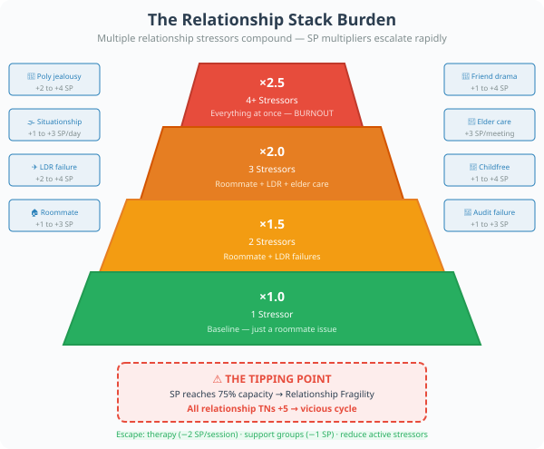
When a character's SP reaches 75% of capacity, they enter Relationship Fragility: all relationship maintenance TNs increase by +5. This models the reality that when you're stressed, you have less emotional bandwidth for relationships — which creates more stress — which creates more relationship problems. It's a vicious cycle that only breaks through intentional self-care, professional help, or reducing the number of active stressors.
Professional Help
Therapy, counseling, and support groups are mechanical resources available to any character:
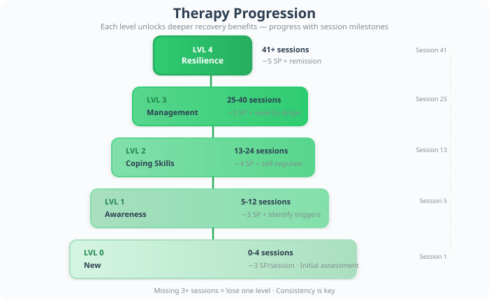
- Individual therapy: $100–250/session (or $0–50 with sliding scale/insurance). Each session: −2 SP. Requires 1 hour/week.
- Couples/family therapy: $150–300/session. Each session: −3 SP for all participants. Can directly resolve one relationship conflict per session.
- Support groups: Free or low-cost ($0–20/session). Each session: −1 SP. Provides community but less targeted help.
- Crisis intervention: When SP hits 0, a crisis hotline call is free and immediate: −3 SP. But this is a band-aid, not a cure. The character needs ongoing support within 30 days or the SP returns.
Reality RPG vs Traditional RPGs 🎭
🐉 Traditional RPGs
- Relationships = flavor text or dice bonuses
- One "true love" NPC per character
- Marriage is a side quest reward
- No mechanical model for friendship
- Family is backstory, not ongoing content
- Breakups don't happen (or are GM-decided)
- No financial dimension to relationships
- Relationships never decay or require maintenance
🏙️ Reality RPG
- Relationships are the primary source of both stress and meaning
- Multiple relationship structures modeled with distinct mechanics
- Every relationship requires active time investment
- Friend groups, roommates, and chosen family are first-class systems
- Family obligations (elder care, sibling dynamics) are ongoing campaigns
- Breakups, ghosting, and estrangement are resolved through dice and narrative
- Marriage is modeled as both emotional bond AND economic contract
- Relationships decay without maintenance — just like real life
Quick Reference: Relationship SP Summary 📋
Poly Jealousy Trigger
SP: +2 to +4 · When: Event-driven
Defense: 2d10 + RES mod vs 40
Open Rel Rule Breach
SP: +1 to +8 · When: Event-driven
Defense: 2d10 + RES mod vs rule TN
Situationship Ambiguity
SP: +1 to +3/day · When: Daily while undefined
Defense: None — ambiguity taxes automatically
LDR Communication Failure
SP: +2 to +4 · When: Weekly check
Defense: 2d10 + EXP mod vs distance TN
Friend Group Drama
SP: +1 to +4 · When: Monthly (if strained)
Defense: 2d10 vs drama table
Roommate Conflict
SP: +1 to +3 · When: Weekly to monthly
Defense: 2d10 + relevant stat vs conflict TN
Elder Care Family Meeting
SP: +3 · When: Per meeting
Defense: 2d10 + INT mod + RES mod vs 50
Childfree Social Pressure
SP: +1 to +4 · When: Per event
Defense: 2d10 + RES mod vs pressure TN
Marriage Audit Failure
SP: +1 to +3 · When: Annual
Defense: 2d10 + relevant stat vs audit TN